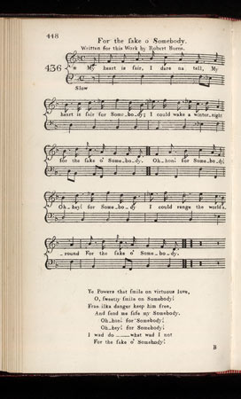

For the sake o' Somebody
Celui qu'on ne doit nommer
Written by Robert Burns for the "Scots Musical Museum": Volume V Page 448 - N°436
followed by a variant from Hogg's "Jacobite Relics", volume II, page 47, N°22
Tune - MélodieAllan Ramsay's "Somebody"
Sequenced by Christian Souchon

|
To the tune:
This song is overtly attributed to Burns in the "Museum" and is believed to have been written by him in 1794. The first two lines of the song are thought to have been taken from Allan Ramsay's (1686-1758) song of the same name in his 'Tea-Table Miscellany' (1724-7). The 'Somebody' referred to in Burns's lyrics could be Bonnie Prince Charlie. Though Burns was born just after the Jacobite rebellion, in order to escape the authorities' attention he kept oblique all Jacobite references. This song is also included in Hogg's "Jacobite Relics", volume II, page 47 under N°22, with the same first verse and three different additional verses, apparently borrowed from other songs. For instance, verse 2 is taken from "Carl an' the King come" . |
A propos de la mélodie:
Ce chant est "officiellement" attribué à Burns dans le "Musée" et l'on croit qu'il le composa en 1794. Les deux premiers vers du chant semblent empruntés à une chanson du même nom d'Allan Ramsay (1686-1758), tirée de son recueil 'Tea-Table Miscellany' (1724-7) ("Diverses chansons à chanter à la table de thé"). "Celui qu'on ne doit nommer" pourrait-être, dans le texte de Burns, Bonnie Prince Charlie. Bien que Burns fût né juste après le soulèvement Jacobite, par crainte des poursuites, ses références Jacobites étaient ainsi maquillées. Ce chant fait aussi partie des "Reliques Jacobites" de Hogg, au volume II, page 47, N°22, avec un 1er couplet identique et 3 couplets différents, tirés sans doute d'autres chansons. C'est ainsi que la strophe 2 est reprise de "Carl an' the King come" . |
1° For the sake of somebody
Scots Musical Museum version

|
FOR THE SAKE OF SOMEBODY
1. My heart is sair -I dare na tell, My heart is sair for Somebody; I could wake a winter night For the sake o' Somebody. O-hon! For Somebody! O-hey! For Somebody! I could range the world around, For the sake o' Somebody. (twice) 2. Ye Powers that smile on virtuous love, O, sweetly smile on Somebody! Frae ilka danger keep him free, And send me safe my Somebody! O-hon! For Somebody! O-hey! For Somebody! I wad do-what wad I not? For the sake o' Somebody. (twice) |
POUR CELUI QU'ON NE DOIT NOMMER
1. J'éprouve un chagrin sans pareil, Pour celui qu'on ne doit nommer; Son sort me tient en éveil Les soirs d'hiver, à pleurer . On ne doit le nommer! On ne doit le nommer! Au bout du monde j'irais, Pour qui l'on ne doit nommer? (bis) 2. Vous, dieux gardiens du pur amour, Celui qu'on ne doit nommer, Protégez-le des dangers pour, Me conserver l'être aimé. On ne doit le nommer! On ne doit le nommer! Qui sait ce que je ferais Pour qui l'on ne doit nommer? (bis> (Trad. Ch. Souchon (c) 2010) |
2° Somebody
Hogg's "Jacobite Relics", volume II, page 47, N°22
|
SOMEBODY
1. My heart is sair, I daurna tell, My heart is sair for somebody; I wad walk a winter's night, For a sight o' somebody. Ohon! For somebody! O hey! For somebody! I wad do - what wad I not, For the sake of somebody! 2. If somebody were come again Then some body maun cross the main, And ilka ane will get his ain, And I will see my somebody. Ohon... 3. What need I kame my tresses bright? Or why should coal or candlelight E'er shine in my bower day or night, Since gane is my dear somebody? Ohon... 4. Oh! I hae grutten mony a day For one that's banish'd far away: I canna sing, and maunna say, How sair I grieve for somebody. Ohon... |
CELUI QU'ON NE DOIT NOMMER
1. J'ai le cœur bien lourd pour celui, Que nul ici ne doit nommer; En plein hiver, toute la nuit, Pour le revoir, je marcherais. O! On ne doit le nommer! O! On ne doit le nommer! Qui sait ce que je ferais, Pour qui l'on ne doit nommer? 2. Et si donc quelqu'un revenait, Qu'un autre reprenait la mer, Chacun son bien recouvrerait! Et je reverrais l'être cher. O! On ne doit... 3. Pour qui peigner mes blonds cheveux? A quoi bon charbon et chandelle? Nuit et jour j'entretiens ce feu. Cette attente finira-t-elle? O! On ne doit... 4. Tant de jours passés à pleurer Son lointain exil, le pauvre homme! Comment dire, comment chanter Mon chagrin sans que je le nomme? O! On ne doit... (Trad. Christian Souchon(c)2010) |